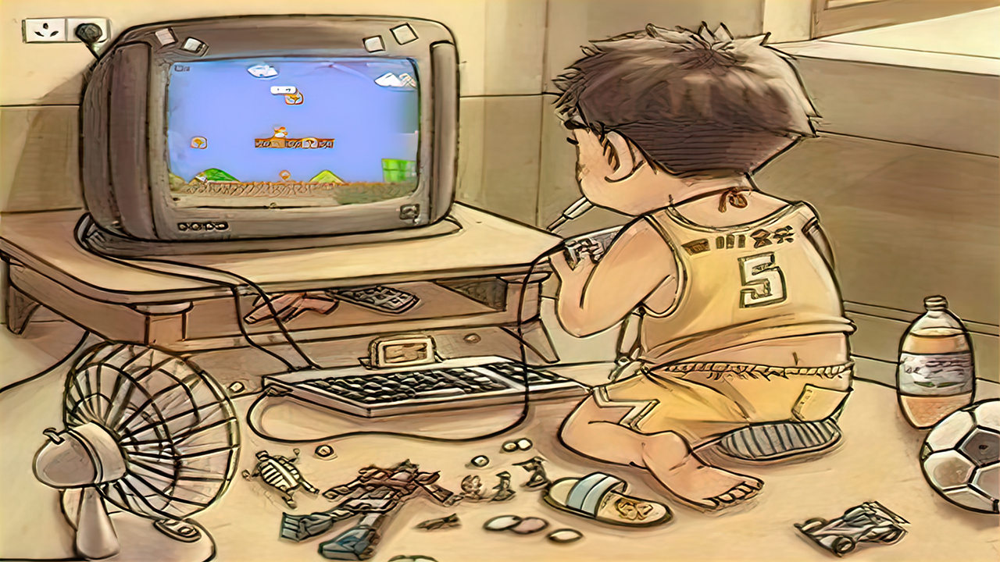

新动态：电玩街机[全新机台，对比旧版资源使用率更低，声音模拟更完善]已上线[浏览器跨平台游玩，支持电脑端、手机端、平板、电视盒子等平台设备...]支持自定义按键，支持手柄、键盘等外设输入！
站点公告：本站为非盈利性质个人站点，必然偶尔会发生无法访问的情况，介时还请多多理解，尽量第一时间恢复访问！
作者：感谢所有支持过本站的朋友们！愿天黑有灯，下雨有伞，平安幸福度一生！
无事阁原创软件_作者：不找事儿
★ 本站网址 ★ www.buzhaoshi.top ★ 或 ★ buzhaoshi.top ★
街机扫描线Super帮助文档
界面按钮功能与使用方法如下
1.何为“自定义模式”？
答：自定义模式里包含了软件自带的多种扫描效果文件，通过“自定义模式套件(软件左下角)”配置出的线性扫描效果需要在这个模式里才能加载使用，效果文件应放入对应的文件夹“软件所在目录/Effect/C”里方能在启动软件时或点击“自定义模式”时读取效果，首次启动软件时此模式为默认选择的模式
2.何为“图片模式”？
答：图片模式里包含了两个示例效果文件，像素大小为“48×48”(像素大小可按需设定)，可通过“PhotoShop”等制图软件来制作效果文件，效果文件应放入对应的文件夹“软件所在目录/Effect/P”里方能在启动软件时或点击“图片模式”时读取效果，在托盘菜单选项中的“高级配置选项”中可以调整图片的显示方式，共有四种模式分别为“左上”“缩放”“居中”“平铺”，软件默认的图片显示方式为平铺，可在“高级配置选项”中查看
补充：全透明效果图片的使用：程序默认会将全透明色作为白色呈现出来，在 "高级配置选项" 中将透明色更改为rgb：255 255 255(白色)后，透明区域才能透明
指定透明颜色效果图片的使用：在 "高级配置选项" 中将透明色更改为 "指定颜色(自行设置的颜色)" 后，指定颜色区域才能透明
具体图片的样式可以参考程序自带的两张示例效果图片，查看效果时可将图片的显示方式更改为 "缩放" 来清楚的查看效果和颜色变化
3.何为“混合模式”？
答：此模式会将“自定义模式”与“图片模式”的效果加以混合后展现出来
4.何为“置顶”？
答：首次启动软件时，默认“置顶”的选择框状态为选中状态，理论在此状态下，本软件窗口会显示在其他窗口的前端，以此来达到覆盖扫描的效果，反之，如果“置顶”的选择框状态为未选中状态，那么本软件窗口就不会显示在其他窗口的前端，也就达不到覆盖扫描的效果了，若锁定窗口后不见扫描效果，当检查一下“置顶”的选择框的状态是否为选中
5.软件上边的“能选择滑动的条条”是干什么用的？
答：这个“条”是调节扫描效果的透明度的，其效果仅在锁定窗口后可见，值为0(左)-255(右)，0则为全透明，255则为非透明，若锁定窗口后不见扫描效果，当检查一下这个“能选择滑动的条条”的位置是否为“0”
6.如何选定扫描效果？
答：首先选定需要使用的模式(软件默认为“自定义模式”)，之后左键双击效果列表里的项目，或右键单击效果列表里的项目(弹出功能菜单)后选定“启用选中效果”即可，选定后，右侧的“待选”会变为“已启用”此时软件便会已“已启用”的效果作为扫描效果来使用
7.何为“智能吸附”？如何使用“街机扫描线Super”的扫描效果？
答：启动软件后，在右下角有一个“智能吸附”按钮，点击这个按钮后，会进入吸附状态，此窗口区域会随鼠标的移动吸附到鼠标指定的窗口等待用户确认，确认后，呈现在面前的即是选择好的扫描效果，此时应点击覆盖区域下层窗口或覆盖区域一次，目的是使覆盖区域下层窗口获取焦点以便控制这个窗口
8.何为“自选区域”？
答：点击“自选区域”按钮后，程序将进入自选区域状态，按住鼠标左键框选需要扫描的区域后，松开鼠标左键再按键盘任意键以完成扫描区域的锁定
托盘功能菜单
1.“^置顶^”
等同于软件界面的“置顶”选项
2.“+#自选区域截图#+”
可自行框选区域进行图片的截取并保存到指定文件夹
3.“#自选区域截取自身”
勾选此项后，使用“+#自选区域截图#+”时，将会同时截取软件自身被框选的部分，反之则不会截取
4.“+图像位数设置”
此功能决定被截取图像的位数，分为1、4、8、16、24、32五个位数选择，程序重启后将恢复默认的32位
5.“+自动预览功能”
勾选此项后，截图后自动打开并预览被截取并保存的图片，反之则不会打开和预览
6.“+自动打开images”
勾选此项后，截图后自动打开保存截图的文件夹，反之则不会打开
7.“+扫描区域截图+”
快速保存本程序窗口所覆盖区域为图片，直接选择储存格式即可，可通过此菜单中的“打开截图文件夹”按钮来打开保存截图的文件夹
8.“自选区域提示”
勾选此项后，使用“+#自选区域截图#+”或主界面的“自选区域”功能时将会有操作提示信息，反之则不会显示
9.“#高级配置选项”
此选项中共三项配置，第一项为“图片模式透明色”，“自定义模式”的透明色为(RGB)：208，222，227“图片模式”的透明色为(RGB)：255，255，255“图片模式”仅支持全透明图片，不支持半透明图片，若使用半透明图片，透明部分将用白色代替 若要恢复默认的透明色只需切换一下模式即可，比如当前为“图片模式”，那就可以先选择“自定义模式”然后再切换为“图片模式”，或者直接重新点击一下“图片模式”即可。第二项为“修改图片模式素材的显示方式”共有四种模式分别为“左上”、“缩放”、“居中”、“平铺”，软件默认的图片显示方式为平铺，此效果可在选中“图片模式”时锁定窗口后调整，可即时查看效果。第三项为“更改效果列表字体大小”共有八种像素可供选择，分别为 9、10、11、12、14、16、18、24，多种像素的选择能更好地支持不同分辨率屏幕的文字显示
10.“#程序配色”
可配置“效果列表”的主题颜色与“自选区边框线条”的颜色
11.“重新吸附窗口 ”
此功能仅在锁定窗口后可用，效果等同于软件界面的“智能吸附”按钮
12.“重新自选区域 ”
此功能仅在锁定窗口后可用，效果等同于软件界面的“自选区域”按钮
13.“更换效果(返回)”
此功能仅在锁定窗口后可用，点击“更换效果(返回)”后返回软件的初始界面，以重新选择效果或其他操作
14.“移动或调整尺寸”
此功能仅在锁定窗口后可用，点击“移动或调整尺寸”后可重新调整位置于大小，此状态下，鼠标按住拖动任意位置可全局移动，靠近窗口边缘可调节窗口大小，按“F5”键确认，或点击左上角的“菜单”-“完成配置并锁定区域”以确认操作
15.“前往软件主页”
在联网的情况下，点击此按钮后将用默认浏览器前往本软件的主页
16.“检测版本(更新)”
在联网的情况下，检测是否有新版本推出，若有新版本将提示更新
注：获得最新版本：由于本站点已迁移，固原始更新地址均已失效，可到 【http://www.buzhaoshi.top】 或 【http://buzhaoshi.top】 作者主页查看各软件的更新动态
17.“支持作者(捐赠)”
若您喜欢“街机扫描线Super”,现在可以支持一下作者，请作者喝瓶啤酒了，点击此按钮后将看见一张五元的微信二维码收款图片，多份支持，多分坚持！
18.“软件介绍与帮助”
在联网的情况下，点击此按钮后将用默认浏览器前往本软件的“帮助文档”页面，如果不出意外，将和您现在查看的帮助文档内容一致
19.“关闭并退出”
关闭并结束“街机扫描线Super”的使用，此致！
=============================
目前，本程序仅支持“窗口”或“窗口全屏化”的扫描，计划在下个版本推出“强制置顶”功能以完成支持部分应用的全屏化扫描，原理是只要被覆盖的程序全屏后不会持续的检测自身是否处于置顶状态，那么下一个版本的“街机扫描线Super”就完全可以完成全屏化置顶的扫描，预计下一个版本将在2021年底前完成发布
新版本已发布_站内直通车：【New】街机扫描线Super_正式版(2021009)_把你的街机荧屏搬回家
再次感谢支持过街机扫描线的朋友们，献上童年怀旧图一张，愿笑口常开！^^

儿时无忧无虑的童年才是最开心最快乐的
★ 本站网址 ★ www.buzhaoshi.top ★ 或 ★ buzhaoshi.top ★